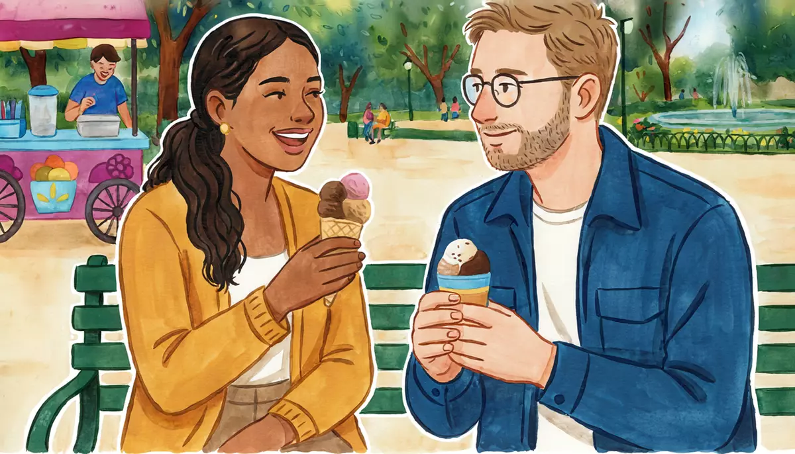

I can say what I like and don't like (food, activities).Goal of this lesson · CEFR Conversation A1
Paso 1 de 8
EscuchaListen
Listen to the conversation, then answer the questions.

Saturday afternoon in Coyoacán. Alex and Mariana buy ice cream and sit in the park. tú (friends)
First listen without the text. Press Escuchar todo and answer the first question. Then show the Spanish text and listen again.
ChooseWhat does Alex NOT like?
Your answer:
M
Mariana¿Te gusta el helado de mamey? Es mi favorito.Do you like mamey ice cream? It's my favorite.
A
AlexMmm, sí, me gusta mucho. ¡Qué rico!Mmm, yes, I like it a lot. How delicious!
M
MarianaA mí me encanta. Oye, ¿y te gusta la comida mexicana?I love it. Hey, and do you like Mexican food?
A
AlexMe encantan los tacos, pero no me gusta mucho el picante.I love tacos, but I don't like spicy food very much.
M
Mariana¿En serio? ¡A mí me encanta el chile! ¿Y los chapulines? ¿Te gustan?Really? I love chili! And chapulines? Do you like them?
A
Alex¿Chapulines? ¿Qué es eso?Chapulines? What's that?
M
MarianaSon insectos, como grillos. Se comen en Oaxaca, con limón y sal.They're insects, like crickets. People eat them in Oaxaca, with lime and salt.
A
AlexMmm… no, gracias. No me gustan los insectos.Mmm… no, thanks. I don't like insects.
M
Mariana¡Ja, ja! A mí tampoco me gustan mucho. Bueno, ¿y qué te gusta hacer los fines de semana?Ha ha! I don't like them much either. OK, and what do you like to do on the weekend?
A
AlexMe gusta caminar, leer y ver películas. ¿Y a ti?I like walking, reading and watching movies. And you?
M
MarianaA mí también me gusta caminar. Y me encanta bailar. ¿Te gusta bailar?I like walking too. And I love dancing. Do you like dancing?
A
AlexMmm, no mucho. ¡Bailo muy mal!Mmm, not much. I dance really badly!
M
MarianaEntonces vamos a una clase de salsa. ¡Es muy divertido!Then let's go to a salsa class. It's a lot of fun!
Read how it works. Play the examples and repeat them aloud.
Me gusta, me gustan
Gustar works backwards from English: the thing you like is the subject. Me gusta + one thing or a verb (me gusta el helado, me gusta caminar); me gustan + plural things (me gustan los tacos). The little word in front says who likes it: me (I), te (you), le (he, she, you-usted), nos (we), les (they, you all). Encantar (to love) works the same way.
who
one thing / a verb
plural things
(a mí) me
gusta el café
gustan los tacos
(a ti) te
gusta bailar
gustan los insectos
(a él, a ella, a usted) le
encanta el chile
encantan las películas
(a nosotros) nos
gusta caminar
gustan los mercados
(a ellos, a ustedes) les
gusta la salsa
gustan los perros
From the conversation:
Me encantan los tacos, pero no me gusta mucho el picante.I love tacos, but I don't like spicy food very much.
¡Ja, ja! A mí tampoco me gustan mucho. Bueno, ¿y qué te gusta hacer los fines de semana?Ha ha! I don't like them much either. OK, and what do you like to do on the weekend?
Me gusta caminar, leer y ver películas. ¿Y a ti?I like walking, reading and watching movies. And you?
You usually don't need mucho with encantar: it already means "like a lot" (me encanta mucho is heard in casual speech). And ¿Y tú? becomes ¿Y a ti? with gustar.
Me too, me neither: también, tampoco
To agree with a positive sentence, say A mí también (me too); to disagree, A mí no. To agree with a negative sentence, say A mí tampoco (me neither); to disagree, A mí sí.
they say
you agree
you disagree
Me gusta el café.
A mí también.
A mí no.
No me gusta el picante.
A mí tampoco.
A mí sí.
From the conversation:
A mí también me gusta caminar. Y me encanta bailar. ¿Te gusta bailar?I like walking too. And I love dancing. Do you like dancing?
How much?
From most to least: me encanta → me gusta mucho → me gusta → no me gusta mucho → no me gusta nada (I don't like it at all). React to food with ¡Qué rico! (delicious!) or, among friends, ¡Guácala! (yuck!).
From the conversation:
Mmm, sí, me gusta mucho. ¡Qué rico!Mmm, yes, I like it a lot. How delicious!
Paso 3 de 8
PracticaPractice
Do the exercises in order. They get freer as you go.
1
ChooseGusta or gustan?
Me ___ el helado de mamey.
¿Te ___ los chapulines?
A Diego le ___ jugar futbol.
Nos ___ los mercados.
2
Type the missing wordsComplete with me, te, le, nos or les.
A mí gusta mucho leer.
I like reading a lot.
Mariana, ¿ gusta el café de olla?
Mariana, do you like café de olla?
A doña Lupita encanta cocinar.
Doña Lupita loves cooking.
A Diego y a mí gustan las películas de terror.
Diego and I like horror movies.
¿A ustedes gusta bailar?
Do you all like dancing?
3
ChooseAgree or disagree? Choose the right reaction.
Diego: «Me encanta el picante.» You love it too. You say:
Mariana: «No me gustan los insectos.» You don't like them either:
Rocío: «No me gusta el futbol.» But you like it:
Don Chuy: «Me gusta mucho la música ranchera.» You don't like it:
4
Listen and chooseListen. Do they like it or not?
Diego and seafood:
Show what they say
Diego: ¿Los mariscos? ¡Guácala! No me gustan nada.
Doña Lupita:
Show what they say
Doña Lupita: A mí me encanta cocinar, sobre todo mole para la familia.
Rocío:
Show what they say
Rocío: No me gusta mucho la televisión. PrefieroI prefer leer.
5
Put the words in orderPut the words in order.
What do you like to do on the weekend?
I don't like spicy food much.
I love tacos al pastor.
6
Say it in SpanishNow you. Say it in Spanish (or type it).
Ask a friend if she likes Mexican food.
¿Te gusta la comida mexicana?
Say you love tacos.
Me encantan los tacos.
Say you don't like spicy food very much.
No me gusta mucho el picante.
Your friend says No me gusta bailar. Say: me neither.
A mí tampoco.
Ask a friend what he likes to do on the weekend.
¿Qué te gusta hacer los fines de semana?
Say you like walking and reading. And you?
Me gusta caminar y leer. ¿Y a ti?
7
Your own sentencesYour likes.
Write 4 sentences: two things you love or like (one food, one activity) and two things you don't like.
Show a model answer
Me encanta el guacamole. Me gusta mucho nadar y escuchar música. No me gustan los mariscos. No me gusta nada cocinar.
Check your answer:
Paso 4 de 8
PalabrasWords
Listen to each word and repeat it. Then do the quick check.
A city magazine asks three people from different parts of Mexico about their favorite food. Read their answers.
Magazine page
¿Qué te gusta comer?
Andrea, 31, Monterrey. «Me encanta la carne asada. Los domingos, mi familia hace carne asada en el patio. También me gustan las tortillas de harinaflour. ¿El picante? Sí, ¡me encanta!»
Felipe, 45, Mérida. «Mi comida favorita es la cochinita pibil: es cerdopork con achioteannatto, a red spice y naranja agriasour. Me gusta mucho con cebolla moradared (purple). No me gusta mucho la comida muy grasosagreasy.»
Daniela, 26, Oaxaca. «Me encantan las tlayudas: son tortillas grandes con frijoles, quesocheese y carne. ¿Los chapulines? A mí sí me gustan, ¡son muy ricos con limón!»
Words with a dotted underline have a translation: tap or hover.
1
ChooseAnswer the questions about the text.
What does Andrea's family do on Sundays?
What is cochinita pibil made with?
Who likes chapulines?
Paso 6 de 8
CulturaCulture
Read about the culture behind the language.
One country, many kitchens
Mexican food is very regional. Puebla is famous for mole poblano, a sauce of chiles, chocolate, spices and seeds; Yucatán for cochinita pibil, pork marinated in achiote and sour orange and slow-cooked; Oaxaca for tlayudas, seven kinds of mole and chapulines (roasted grasshoppers with lime, chili and salt); the north for carne asada and flour tortillas. Not everything is spicy: the salsa is usually on the side, so you choose.
In 2010 UNESCO added traditional Mexican cuisine to its list of the Intangible Cultural Heritage of Humanity: among the first culinary traditions on the list, in the same year as the gastronomic meal of the French and the Mediterranean diet. The listing highlights corn, beans and chili, and the community traditions around them.
Elsewhere: Food in Spanish-speaking countries is very varied: tapas and paella in Spain (usually not spicy), asado in Argentina, arepas in Venezuela and Colombia, ceviche in Peru.
Sources
UNESCO, Intangible Cultural Heritage: “Traditional Mexican cuisine: ancestral, ongoing community culture, the Michoacán paradigm” (inscribed 2010).
Instituto Cervantes, Plan curricular, «Referentes culturales: gastronomía».
1
ChooseCheck: what did you learn?
Where are chapulines a typical food?
Paso 7 de 8
Tu turnoYour turn
Now use it: do the role play, then write.
Role play: Getting to know Diego
You and Diego are waiting for Doña Lupita's Sunday lunch. Talk about what you like: food, music, sports, the weekend. Use tú.
You
Ask Diego what food he likes.
Say what you love and what you don't like.
React to his likes: A mí también / A mí tampoco / A mí sí / A mí no.
Ask what he likes to do on the weekend.
Say what you like to do.
Diego
Loves tacos al pastor and spicy food; hates seafood (¡Guácala!).
Asks if you like spicy food.
Likes playing soccer and video games.
Doesn't like getting up early.
Asks what you like to do.
1. Listen to a model
One way the conversation could go. Listen, then try it yourself without looking.
A
AlexOye, Diego, ¿qué comida te gusta?Hey, Diego, what food do you like?
D
Diego¡Me encantan los tacos al pastor! Y el picante. ¿A ti te gusta el picante?I love tacos al pastor! And spicy food. Do you like spicy food?
A
AlexNo mucho. Pero me gusta mucho el guacamole.Not much. But I really like guacamole.
D
DiegoA mí también. Pero no me gustan los mariscos. ¡Guácala!Me too. But I don't like shellfish. Yuck!
A
Alex¡A mí sí! Me encantan los camarones. ¿Y qué te gusta hacer los fines de semana?I do! I love shrimp. And what do you like to do on the weekend?
D
DiegoJugar futbol y videojuegos. No me gusta levantarme temprano.Playing soccer and video games. I don't like getting up early.
A
Alex¡A mí tampoco! Me gusta caminar y ver películas.Me neither! I like walking and watching movies.
2. Record yourself
Say your part aloud (pause the model after each of Diego's lines), or answer the questions in the role card. Then play it back and compare.
3. Practice with an AI partner (optional)
Copy this prompt into ChatGPT or Claude, switch on voice mode, and have the conversation. It plays Diego.
Stuck? Say «ayuda» and it gives you a hint in English, then carries on.
Finished? Say «terminamos» and it gives you feedback in English: what you did well, your mistakes, and useful phrases for next time.
Let's practice Spanish (Mexican Spanish, level A1). You are Diego, 21, an engineering student in Mexico City. Use "tú" and a little Mexican slang ("¡qué padre!", "¡guácala!").
We're chatting before Sunday lunch at your grandmother's house. You love tacos al pastor and spicy food, you hate seafood, you like soccer (you support Pumas, the UNAM team) and video games, and you don't like getting up early.
Rules:
- Speak only Spanish, short turns (1-2 sentences), simple language for an A1 learner. Speak slowly and use very common words.
- Ask me what I like and don't like: food, music, sports, weekend activities. After each answer, react using "A mí también / A mí tampoco / A mí sí / A mí no" and tell me your own taste. One question at a time.
- You play only this one person. Never speak as anyone else, and don't describe what other people say or do.
- If I make a mistake, don't stop me: repeat what I said correctly in your answer (for example: if I say "Me gusta los tacos", you say "¿Te gustan los tacos? ¡A mí también!").
- Once, say something negative ("No me gusta levantarme temprano") to see if I answer correctly with "A mí tampoco" or "A mí sí".
- When I say "ayuda", step out of the role play for a moment: in English, give me a short hint about what I could say next, with one or two short Spanish options, then continue the role play where we were.
- When I say "terminamos", stop the role play and give me feedback in English: 3 things I did well, up to 3 mistakes with corrections, and 3 useful phrases for next time.
Start now: ask "Oye, ¿te gusta la comida mexicana?"
Writing: My likes for the language-exchange app
Add a "Mis gustos" section to your language-exchange profile: food you love and don't like, what you like to do in your free time, and one thing you don't like at all.
35–60 words.
Show a model answer
Mis gustos: me encanta la comida mexicana, sobre todo los tacos y el guacamole, pero no me gusta mucho el picante. En mi tiempo libre me gusta caminar, leer y ver películas. También me gusta cocinar con amigos. No me gusta nada bailar.
Check your text:
Paso 8 de 8
¿Lo logré?Did I do it?
Check yourself against the goal of the lesson.
Read each statement and be honest: anything marked casi or todavía no goes into Repaso so it comes back soon.
I can say what I like, love and don't like, with gusta / gustan.
I can ask others what they like (¿Te gusta…?) and answer (¿Y a ti?).
I can agree and disagree with también, tampoco, a mí sí, a mí no.
I can talk about free-time activities with me gusta + verbo.
I can understand people talking simply about their tastes.